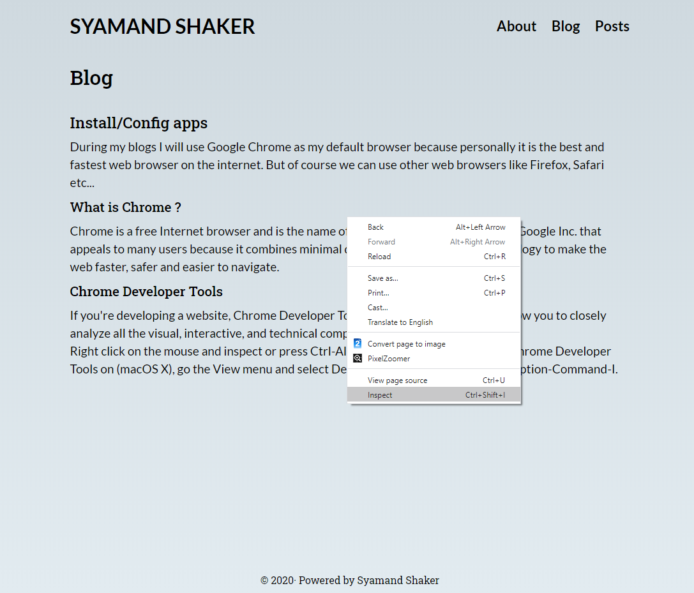
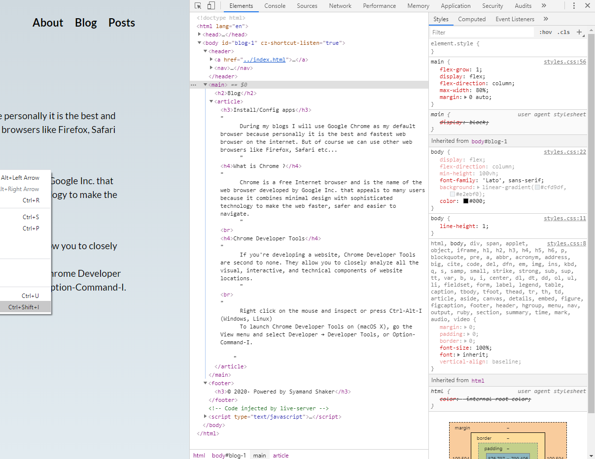

Install/Config apps
During my blogs I will use Google Chrome as my default browser because personally it is the best and fastest web browser on the internet. But of course we can use other web browsers like Firefox, Safari etc...So let me tell you a little bit about what Chrome is, what we can do with it, and an amazing tool that's built into it.
Here is the link to install Google Chrome
What is Chrome ?
Chrome is a free Internet browser and is the name of the web browser developed by Google Inc. that appeals to many users because it combines minimal design with sophisticated technology to make the web faster, safer and easier to navigate.Chrome Developer Tools
If you're developing a website, Chrome Developer Tools are second to none. They allow you to closely analyze all the visual, interactive, and technical components of website locations.Right click on the mouse and inspect or press Ctrl-Alt-I (Windows, Linux) To launch Chrome Developer Tools on (macOS X), go the View menu and select Developer → Developer Tools, or Option-Command-I.

The developer view allows you to navigate the web on one side of the window, and inspect the resource's components and attributes on the other. 